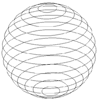
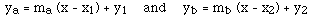
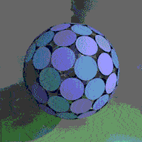
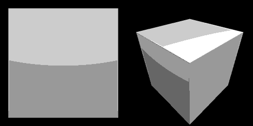

<html>
<head>
<link rel=StyleSheet href="../../pdbstyle.css" type="text/css" media=all>
<title>Circle, Cylinder, Sphere</title></html>
<body>
<meta name="viewport" content="width=device-width, initial-scale=1">
<meta http-equiv="Content-Type" content="text/html; charset=utf-8"/>
<script language="JavaScript">
<!--
   if (self.location.href != top.location.href) {
      top.location.href = self.location.href;
   }
-->
</script>


<center><table width=800><tr><td>

<center>
<h1>Circles and spheres</h1>
<b>
In what follows are various notes and algorithms dealing with circles and spheres.
</b>
</center>
<p><br><br><br><p>

<center>
<h1>Spheres, equations and terminology</h1>
Written by <a href="../index.html">Paul Bourke</a><br>
April 1992<p>
<!--
<a href="gtcircle.c">OpenGL/GLUT source code</a> demonstrating the
Great Circle
-->
</center>

<b>Definition</b><p>
<p align="justify">
The most basic definition of the surface of a sphere is "the set of points
an equal distance (called the radius) from a single point called the center".
Or as a function of 3 space coordinates (x,y,z),
all the points satisfying the following lie on a sphere of radius r
centered at the origin
</p>

<ul>
x<sup>2</sup> + y<sup>2</sup> + z<sup>2</sup> = r<sup>2</sup>
</ul>

<p align="justify">
For a sphere centered at a point (x<sub>o</sub>,y<sub>o</sub>,z<sub>o</sub>)
the equation is simply
</p>

<ul>
(x - x<sub>o</sub>)<sup>2</sup> + 
(y - y<sub>o</sub>)<sup>2</sup> + 
(z - z<sub>o</sub>)<sup>2</sup> = r<sup>2</sup>
</ul>

<p align="justify">
If the expression on the left is less than r<sup>2</sup> then the point (x,y,z)
is on the interior of the sphere, if greater than r<sup>2</sup> it is on the
exterior of the sphere.
</p>

A sphere may be defined parametrically in terms of (u,v)<p>

<ul>
x = x<sub>o</sub> + r cos(phi) cos(theta)<br> 
y = y<sub>o</sub> + r cos(phi) sin(theta)<br>
z = z<sub>o</sub> + r sin(phi)
</ul>

<p align="justify">
Where 0 &lt;= theta &lt; 2 pi, and -pi/2 &lt;= phi &lt;= pi/2.
The convention in common usage is for lines 
of constant theta to run from one pole (phi = -pi/2 for the south pole)
to the other pole (phi = pi/2 for the north pole) and are
usually referred to as lines of longitude. Lines of constant phi are
often referred to as lines of latitude, for example the equator is
at phi = 0.
<p>

<b>Lines through a sphere</b><p>

<p align="justify">
A line can intersect a sphere at one point in which case it is called
a tangent. It can not intersect the sphere at all or it can intersect
the sphere at two points, the entry and exit points. 
For the mathematics for the intersection point(s) of a line (or line
segment) and a sphere <a href="index.html#linesphere">see this</a>.
</p>

<b>Antipodal points</b><p>

<p align="justify">
A line that passes
through the center of a sphere has two intersection points, these
are called antipodal points.
</p>

<b>Planes through a sphere</b><p>

<p align="justify">
A plane can intersect a sphere at one point in which case it is called a 
tangent plane. Otherwise if a plane intersects a sphere the "cut" is a
circle. Lines of latitude are examples of planes that intersect the
Earth sphere.
</p>

<table width=100%><tr><td align="center">
<br>
Lines of latitude
</td><td align="center">
<br>
Lines of longitude (Meridians)
</td></tr></table>
<p>

<table width=100%><tr><td valign="top">
<b>Great Circles</b><p>
<p align="justify">
A great circle is the intersection a plane and a sphere where
the plane also passes through the center of the sphere.
Lines of longitude and the equator of the Earth are examples of great circles.
Two points on a sphere that are not antipodal 
define a unique great circle, it traces the shortest 
path between the two points.
If the points are antipodal there are an infinite number of great circles
that pass through them, for example, the antipodal points of the north
and south pole of Earth (there are of course infinitely many others).
<!--
All points on a great circle through 
(x<sub>1</sub>,y<sub>1</sub>,z<sub>1</sub>) and
(x<sub>2</sub>, y<sub>2</sub>,z<sub>2</sub>) satisfy<p>
<ul>
(x - x<sub>1</sub>) (x - x<sub>2</sub>) + 
(y - y<sub>1</sub>) (y - y<sub>2</sub>) + 
(z - z<sub>1</sub>) (z - z<sub>2</sub>) = 0
</ul>
-->
<p align="justify">
Great circles define geodesics for a sphere. (A geodesic is the closest
path between two points on any surface).
</p>
</td><td valign="top">

</td.</tr></table>
<p>

<b>Lune</b><p>
<p align="justify">
A lune is the area between two great circles who share antipodal points. 
If the angle between the
planes defining the great circle is A, then the area of a lune on
a sphere of radius r is<p>
</p>
<center>
area = 2 A r<sup>2</sup>
</center>

<table width=100%><tr><td valign="top">
<b>Triangles</b><p>
<p align="justify">
A triangle on a sphere is defined as the intersecting area of three
great circles.
Unlike a plane where the interior angles of a triangle
sum to pi radians (180 degrees), 
on a sphere the interior angles sum to more than pi.
As the sphere becomes large compared to the triangle then the 
the sum of the internal angles approach pi.
</p>
The area of a spherical triangle with internal angles A,B,C is simply<p>
<center>
area = r<sup>2</sup> ( A + B + C - pi )
</center><p>
In terms of the lengths of the sides of the spherical triangle a,b,c then<p>
<center>
area = 4 arctan [ sqrt( tan(m/2) tan((m-a)/2) tan((m-b)/2) tan((m-c)/2) ) ]
<br>
where m = ( a+b+c ) / 2
</center>
<p>
A similar result for a four sided polygon on the surface of a sphere is<p>
<center>
area = r<sup>2</sup> ( A + B + C + D - 2 pi )
</center><p>
</td><td>

</td></tr></table>
<p>

<b>Ellipsoid</b><p>

<p align="justify">
An ellipsoid squashed along each (x,y,z) axis by a,b,c is defined as
</p>
<ul>
[(x - x<sub>o</sub>) / a]<sup>2</sup> +
[(y - y<sub>o</sub>) / b]<sup>2</sup> +
[(z - z<sub>o</sub>) / c]<sup>2</sup> = r<sup>2</sup>
</ul>
<p>

Or parametrically
<ul>
x = x<sub>o</sub> + a r cos(theta) cos(phi)<br>
y = y<sub>o</sub> + b r cos(theta) sin(phi)<br>
z = z<sub>o</sub> + c r sin(theta) 
</ul>
<p>

<p><br><br><br><p>


<center>
<h1>Equation of a Circle from 3 Points (2 dimensions)</h1>
Written by <a href="../index.html">Paul Bourke</a><br>
January 1990<p>
</center>

<p align="justify">
This note describes a technique for determining the attributes of a circle
(centre and radius) given three points <b>P<sub>1</sub></b>, 
<b>P<sub>2</sub></b>, and <b>P<sub>3</sub></b> on a
plane.<p>
</p>

<center></center><p>

<b>Calculating Centre</b><p>

<p slign="justify">
Two lines can be formed through 2 pairs of the three points, the first passes
through the first two points <b>P<sub>1</sub></b> 
and <b>P<sub>2</sub></b>. Line b passes through the
next two points <b>P<sub>2</sub></b> and <b>P<sub>3</sub></b>. 
<br>
The equation of these two lines is
</p>

<center></center><p>

where m is the slope of the line given by<p>

<center></center><p>

<p align="justify">
The centre of the circle is the intersection of the two lines perpendicular to
and passing through the midpoints of the lines 
<b>P<sub>1</sub></b><b>P<sub>2</sub></b> and
<b>P<sub>2</sub></b> <b>P<sub>3</sub></b>. 
The perpendicular of a line with slope m has slope -1/m, thus equations of the
lines perpendicular to lines a and b and passing through the midpoints of
<b>P<sub>1</sub></b><b>P<sub>2</sub></b> and 
<b>P<sub>2</sub></b><b>P<sub>3</sub></b> are
</p>

<center></center><p>

These two lines intersect at the centre, solving for x gives<p>

<center></center><p>

<p align="justify">
Calculate the y value of the centre by substituting the x value into one of the
equations of the perpendiculars. Alternatively one can also rearrange the
equations of the perpendiculars and solve for y.
</p>

<b>Radius</b><p>

<p align="justify">
The radius is easy, for example the point <b>P<sub>1</sub></b> 
lies on the circle and we know the centre....
</p>

<b>Notes:</b><p>
<ul>
<li>The denominator (mb - ma) is only zero when the lines are parallel in which
case they must be coincident and thus no circle results.<p>
<li>If either line is vertical then the corresponding slope is infinite. This can
be solved by simply rearranging the order of the points so that vertical lines
do not occur.
</ul>

<b>Source Code</b><p>
C++ code implemented as MFC (MS Foundation Class) supplied by
Jae Hun Ryu. <a href="Circle.cpp">Circle.cpp</a>,
<a href="Circle.h">Circle.h</a>.

<p><br><br><br><p>


<center>
<h1>Equation of a Sphere from 4 Points on the Surface</h1>
Written by <a href="../index.html">Paul Bourke</a><br>
June 2002<p>
</center>

<p align="justify">
Given 4 points in 3 dimensional space 
[
(x<sub>1</sub>,y<sub>1</sub>,z<sub>1</sub>)
(x<sub>2</sub>,y<sub>2</sub>,z<sub>2</sub>)
(x<sub>3</sub>,y<sub>3</sub>,z<sub>3</sub>)
(x<sub>4</sub>,y<sub>4</sub>,z<sub>4</sub>)
]
the equation of the
sphere with those points on the surface is found by solving
the following determinant.
</p>

<center>
<table cellpadding=4 cellspacing=0><tr>
<td></td>
<td>
<table cellpadding=6 cellspacing=0 border=0><tr>
<td valign="bottom">x<sup>2</sup> + 
	y<sup>2</sup> + 
	z<sup>2</sup></td>
<td valign="bottom">x</td>
<td valign="bottom">y</td>
<td valign="bottom">z</td>
<td valign="bottom">1</td>
</tr><tr>
<td valign="bottom">x<sub>1</sub><sup>2</sup> + 
	y<sub>1</sub><sup>2</sup> + 
	z<sub>1</sub><sup>2</sup></td>
<td valign="bottom">x<sub>1</sub></td>
<td valign="bottom">y<sub>1</sub></td>
<td valign="bottom">z<sub>1</sub></td>
<td valign="bottom">1</td>
</tr><tr>
<td valign="bottom">x<sub>2</sub><sup>2</sup> +
   y<sub>2</sub><sup>2</sup> +
   z<sub>2</sub><sup>2</sup></td>
<td valign="bottom">x<sub>2</sub></td>
<td valign="bottom">y<sub>2</sub></td>
<td valign="bottom">z<sub>2</sub></td>
<td valign="bottom">1</td>
</tr><tr>
<td valign="bottom">x<sub>3</sub><sup>2</sup> +
   y<sub>3</sub><sup>2</sup> +
   z<sub>3</sub><sup>2</sup></td>
<td valign="bottom">x<sub>3</sub></td>
<td valign="bottom">y<sub>3</sub></td>
<td valign="bottom">z<sub>3</sub></td>
<td valign="bottom">1</td>
</tr><tr>
<td valign="bottom">x<sub>4</sub><sup>2</sup> +
   y<sub>4</sub><sup>2</sup> +
   z<sub>4</sub><sup>2</sup></td>
<td valign="bottom">x<sub>4</sub></td>
<td valign="bottom">y<sub>4</sub></td>
<td valign="bottom">z<sub>4</sub></td>
<td valign="bottom">1</td>
</tr></table>
</td>
<td></td>
<td valign="center">=</td>
<td valign="center">0</td>
</tr></table>
</center><p>

<p align="justify">
There are conditions on the 4 points, they are listed below
and correspond to the determinant above being undefined (no
solutions, multiple solutions, or infinite solutions).
</p>
<ul>
<li>No three combinations of the 4 points can be collinear.<p>
<li>All 4 points cannot lie on the same plane (coplanar).<p>
</ul>

<p align="justify">
If the determinant is found using the expansion by minors using
the top row then the equation of the sphere can be written as
follows.
</p>

<table cellpadding=4 cellspacing=0><tr>
<td>(x<sup>2</sup> + y<sup>2</sup> + z<sup>2</sup>)</td>
<td></td>
<td>
<table cellpadding=6 cellspacing=0 border=0><tr>
<td valign="bottom">x<sub>1</sub></td>
<td valign="bottom">y<sub>1</sub></td>
<td valign="bottom">z<sub>1</sub></td>
<td valign="bottom">1</td>
</tr><tr>
<td valign="bottom">x<sub>2</sub></td>
<td valign="bottom">y<sub>2</sub></td>
<td valign="bottom">z<sub>2</sub></td>
<td valign="bottom">1</td>
</tr><tr>
<td valign="bottom">x<sub>3</sub></td>
<td valign="bottom">y<sub>3</sub></td>
<td valign="bottom">z<sub>3</sub></td>
<td valign="bottom">1</td>
</tr><tr>
<td valign="bottom">x<sub>4</sub></td>
<td valign="bottom">y<sub>4</sub></td>
<td valign="bottom">z<sub>4</sub></td>
<td valign="bottom">1</td>
</tr></table>
</td>
<td></td>

<td>- x</td>
<td></td>
<td>
<table cellpadding=6 cellspacing=0 border=0><tr>
<td valign="bottom">x<sub>1</sub><sup>2</sup> +
   y<sub>1</sub><sup>2</sup> +
   z<sub>1</sub><sup>2</sup></td>
<td valign="bottom">y<sub>1</sub></td>
<td valign="bottom">z<sub>1</sub></td>
<td valign="bottom">1</td>
</tr><tr>
<td valign="bottom">x<sub>2</sub><sup>2</sup> +
   y<sub>2</sub><sup>2</sup> +
   z<sub>2</sub><sup>2</sup></td>
<td valign="bottom">y<sub>2</sub></td>
<td valign="bottom">z<sub>2</sub></td>
<td valign="bottom">1</td>
</tr><tr>
<td valign="bottom">x<sub>3</sub><sup>2</sup> +
   y<sub>3</sub><sup>2</sup> +
   z<sub>3</sub><sup>2</sup></td>
<td valign="bottom">y<sub>3</sub></td>
<td valign="bottom">z<sub>3</sub></td>
<td valign="bottom">1</td>
</tr><tr>
<td valign="bottom">x<sub>4</sub><sup>2</sup> +
   y<sub>4</sub><sup>2</sup> +
   z<sub>4</sub><sup>2</sup></td>
<td valign="bottom">y<sub>4</sub></td>
<td valign="bottom">z<sub>4</sub></td>
<td valign="bottom">1</td>
</tr></table>
</td>
<td></td>
</tr></table><p>

<table><tr>
<td>+ y</td> 
<td></td>
<td>
<table cellpadding=6 cellspacing=0 border=0><tr>
<td valign="bottom">x<sub>1</sub><sup>2</sup> +
   y<sub>1</sub><sup>2</sup> +
   z<sub>1</sub><sup>2</sup></td>
<td valign="bottom">x<sub>1</sub></td>
<td valign="bottom">z<sub>1</sub></td>
<td valign="bottom">1</td>
</tr><tr>
<td valign="bottom">x<sub>2</sub><sup>2</sup> +
   y<sub>2</sub><sup>2</sup> +
   z<sub>2</sub><sup>2</sup></td>
<td valign="bottom">x<sub>2</sub></td>
<td valign="bottom">z<sub>2</sub></td>
<td valign="bottom">1</td>
</tr><tr>
<td valign="bottom">x<sub>3</sub><sup>2</sup> +
   y<sub>3</sub><sup>2</sup> +
   z<sub>3</sub><sup>2</sup></td>
<td valign="bottom">x<sub>3</sub></td>
<td valign="bottom">z<sub>3</sub></td>
<td valign="bottom">1</td>
</tr><tr>
<td valign="bottom">x<sub>4</sub><sup>2</sup> +
   y<sub>4</sub><sup>2</sup> +
   z<sub>4</sub><sup>2</sup></td>
<td valign="bottom">x<sub>4</sub></td>
<td valign="bottom">z<sub>4</sub></td>
<td valign="bottom">1</td>
</tr></table>
</td>
<td></td>

<td>- z</td>
<td></td>
<td>
<table cellpadding=6 cellspacing=0 border=0><tr>
<td valign="bottom">x<sub>1</sub><sup>2</sup> +
   y<sub>1</sub><sup>2</sup> +
   z<sub>1</sub><sup>2</sup></td>
<td valign="bottom">x<sub>1</sub></td>
<td valign="bottom">y<sub>1</sub></td>
<td valign="bottom">1</td>
</tr><tr>
<td valign="bottom">x<sub>2</sub><sup>2</sup> +
   y<sub>2</sub><sup>2</sup> +
   z<sub>2</sub><sup>2</sup></td>
<td valign="bottom">x<sub>2</sub></td>
<td valign="bottom">y<sub>2</sub></td>
<td valign="bottom">1</td>
</tr><tr>
<td valign="bottom">x<sub>3</sub><sup>2</sup> +
   y<sub>3</sub><sup>2</sup> +
   z<sub>3</sub><sup>2</sup></td>
<td valign="bottom">x<sub>3</sub></td>
<td valign="bottom">y<sub>3</sub></td>
<td valign="bottom">1</td>
</tr><tr>
<td valign="bottom">x<sub>4</sub><sup>2</sup> +
   y<sub>4</sub><sup>2</sup> +
   z<sub>4</sub><sup>2</sup></td>
<td valign="bottom">x<sub>4</sub></td>
<td valign="bottom">y<sub>4</sub></td>
<td valign="bottom">1</td>
</tr></table>
</td>
<td></td>

<td>+</td>
<td></td>
<td>
<table cellpadding=6 cellspacing=0 border=0><tr>
<td valign="bottom">x<sub>1</sub><sup>2</sup> +
   y<sub>1</sub><sup>2</sup> +
   z<sub>1</sub><sup>2</sup></td>
<td valign="bottom">x<sub>1</sub></td>
<td valign="bottom">y<sub>1</sub></td>
<td valign="bottom">z<sub>1</sub></td>
</tr><tr>
<td valign="bottom">x<sub>2</sub><sup>2</sup> +
   y<sub>2</sub><sup>2</sup> +
   z<sub>2</sub><sup>2</sup></td>
<td valign="bottom">x<sub>2</sub></td>
<td valign="bottom">y<sub>2</sub></td>
<td valign="bottom">z<sub>2</sub></td>
</tr><tr>
<td valign="bottom">x<sub>3</sub><sup>2</sup> +
   y<sub>3</sub><sup>2</sup> +
   z<sub>3</sub><sup>2</sup></td>
<td valign="bottom">x<sub>3</sub></td>
<td valign="bottom">y<sub>3</sub></td>
<td valign="bottom">z<sub>3</sub></td>
</tr><tr>
<td valign="bottom">x<sub>4</sub><sup>2</sup> +
   y<sub>4</sub><sup>2</sup> +
   z<sub>4</sub><sup>2</sup></td>
<td valign="bottom">x<sub>4</sub></td>
<td valign="bottom">y<sub>4</sub></td>
<td valign="bottom">z<sub>4</sub></td>
</tr></table>
</td>
<td></td>
<td>= 0</td>
</tr></table>
<p>

Or more simply in term of the minors M<sub>1j</sub><p>
<center>
(x<sup>2</sup> + y<sup>2</sup> + z<sup>2</sup>) M<sub>11</sub> -
x M<sub>12</sub> +
y M<sub>13</sub> -
z M<sub>14</sub> +
M<sub>15</sub> = 0
<p></center>

The general equation of a sphere with radius r centered at 
(x<sub>0</sub>,y<sub>0</sub>,z<sub>0</sub>) is<p>
<center>
(x - x<sub>0</sub>)<sup>2</sup> +
(y - y<sub>0</sub>)<sup>2</sup> +
(z - z<sub>0</sub>)<sup>2</sup> = r<sup>2</sup>
</center>

<p align="justify">
Equating the terms from these two equations allows one to solve for the
center and radius of the sphere, namely:
</p>
<center>
<table><tr><td>
x<sub>0</sub> = 0.5 M<sub>12</sub> / M<sub>11</sub>
<p>
y<sub>0</sub> = - 0.5 M<sub>13</sub> / M<sub>11</sub>
<p>
z<sub>0</sub> = 0.5 M<sub>14</sub> / M<sub>11</sub>
<p>
r<sup>2</sup> = x<sub>0</sub><sup>2</sup> + y<sub>0</sub><sup>2</sup>
+ z<sub>0</sub><sup>2</sup> - M<sub>15</sub> / M<sub>11</sub>
</td></tr></table>
</center>
<p align="justify">
Note that these can't be solved for M<sub>11</sub> equal to zero.
This corresponds to no quadratic terms (x<sup>2</sup>, y<sup>2</sup>,
z<sup>2</sup>) in which case we aren't dealing with a sphere and the
points are either coplanar or three are collinear.
</p>

<b>C source code</b>
<p align="justify">
<a href="spheretest.c">This piece of simple C code</a> tests the
solution as described above. It creates a known sphere (center and
radius) and creates 4 random points on that sphere. It then proceeds to
find the original center and radius using those four random points.
</p>

<p><br><br><br><p>


<center>
<a name="linesphere">
<h1>Intersection of a Line and a Sphere (or circle)</h1>
</a>
Written by <a href="../index.html">Paul Bourke</a><br>
November 1992<p>
</center>

<center></center>

<p align="justify">
Points <b>P</b> (x,y) on a line defined by two points 
<b>P</b><sub>1</sub> (x<sub>1</sub>,y<sub>1</sub>,z<sub>1</sub>) and
<b>P</b><sub>2</sub> (x<sub>2</sub>,y<sub>2</sub>,z<sub>2</sub>) is 
described by
</p>

<center>
<b>P</b> = <b>P</b><sub>1</sub> + u (<b>P</b><sub>2</sub> - 
<b>P</b><sub>1</sub>)<p>
</center>

<p align="justify">
or in each coordinate
</p>

<center>
x = x<sub>1</sub> + u (x<sub>2</sub> - x<sub>1</sub>)<br>
y = y<sub>1</sub> + u (y<sub>2</sub> - y<sub>1</sub>)<br>
z = z<sub>1</sub> + u (z<sub>2</sub> - z<sub>1</sub>)<p>
</center>

<p align="justify">
A sphere centered at <b>P</b><sub>3</sub> 
(x<sub>3</sub>,y<sub>3</sub>,z<sub>3</sub>) 
with radius r is described by
</p>

<center>
(x - x<sub>3</sub>)<sup>2</sup> + 
(y - y<sub>3</sub>)<sup>2</sup> + 
(z - z<sub>3</sub>)<sup>2</sup>  
= r<sup>2</sup>
</center>

<p align="justify">
Substituting the equation of the line into the sphere gives a quadratic
equation of the form
</p>

<center>a u<sup>2</sup> + b u + c = 0</center><p>

<p align="justify">
where:
</p>

<center>
a = (x<sub>2</sub> - x<sub>1</sub>)<sup>2</sup> + 
(y<sub>2</sub> - y<sub>1</sub>)<sup>2</sup> + 
(z<sub>2</sub> - z<sub>1</sub>)<sup>2</sup>
<p> 
b = 2[
(x<sub>2</sub> - x<sub>1</sub>) (x<sub>1</sub> - x<sub>3</sub>) + 
(y<sub>2</sub> - y<sub>1</sub>) (y<sub>1</sub> - y<sub>3</sub>) +
(z<sub>2</sub> - z<sub>1</sub>) (z<sub>1</sub> - z<sub>3</sub>) 
]
<p>
c = x<sub>3</sub><sup>2</sup> + 
y<sub>3</sub><sup>2</sup> + 
z<sub>3</sub><sup>2</sup> +
x<sub>1</sub><sup>2</sup> +
y<sub>1</sub><sup>2</sup> + 
z<sub>1</sub><sup>2</sup> -
2[x<sub>3</sub> x<sub>1</sub> + 
y<sub>3</sub> y<sub>1</sub> +
z<sub>3</sub> z<sub>1</sub>] 
- r<sup>2</sup>
</center>

<p align="justify">
The solutions to this quadratic are described by
</p>

<center></center>
<p>

<p align="justify">
The exact behaviour is determined by the expression within the square root<p>
<center>b * b - 4 * a * c </center>
</p>

<ul>
<li><p align="justify">
If this is less than 0 then the line does not intersect the sphere.
</p>
<li><p align="justify">
If it equals 0 then the line is a tangent to the sphere intersecting it at
one point, namely at u = -b/2a.
</p>
<li><p align="justify">
If it is greater then 0 the line intersects the sphere at two points.
</p>
</ul>

<p align="justify">
To apply this to two dimensions, that is, the intersection of a line
and a circle simply remove the z component from the above mathematics.
</p>

<h3>Line Segment</h3>
<p align="justify">
For a line segment between <b>P</b><sub>1</sub> and <b>P</b><sub>2</sub>
there are 5 cases to consider.
</p>
<ul>
<li><p align="justify">
Line segment doesn't intersect and on outside of sphere, in which case both values of 
u will either be less than 0 or greater than 1.
</p>
<li><p align="justify">
Line segment doesn't intersect and is inside sphere, in which case one value of 
u will be negative and the other greater than 1.
</p>
<li><p align="justify">
Line segment intersects at one point, in which case one value of 
u will be between 0 and 1 and the other not.
</p>
<li><p align="justify">
Line segment intersects at two points, in which case both values of 
u will be between 0 and 1.
</p>
<li><p align="justify">
Line segment is tangential to the sphere, in which case both values of 
u will be the same and between 0 and 1.
</p>
</ul>

<p align="justify">
When dealing with a 
line segment it may be more efficient to first determine whether the
line actually intersects the sphere or circle. This is achieved by
noting that the closest point on the line through 
<b>P</b><sub>1</sub><b>P</b><sub>2</sub>
to the point <b>P</b><sub>3</sub> is along a perpendicular from
<b>P</b><sub>3</sub> to the line. In other words if <b>P</b> is
the closest point on the line then
</p>

<center>
(<b>P</b><sub>3</sub> - <b>P</b>) dot 
(<b>P</b><sub>2</sub> - <b>P</b><sub>1</sub>) = 0
</center>

<p align="justify">
Substituting the equation of the line into this 
</p>

<center>
[<b>P</b><sub>3</sub> - <b>P</b><sub>1</sub> - 
u(<b>P</b><sub>2</sub> - <b>P</b><sub>1</sub>)] dot 
(<b>P</b><sub>2</sub> - <b>P</b><sub>1</sub>) = 0
</center>

<p align="justify">
Solving the above for u = 
</p>

<center>
(x<sub>3</sub> - x<sub>1</sub>)(x<sub>2</sub> - x<sub>1</sub>) + 
(y<sub>3</sub> - y<sub>1</sub>)(y<sub>2</sub> - y<sub>1</sub>) + 
(z<sub>3</sub> - z<sub>1</sub>)(z<sub>2</sub> - z<sub>1</sub>)
<br>
-----------------------------------------------------------
<br>
(x<sub>2</sub> - x<sub>1</sub>)(x<sub>2</sub> - x<sub>1</sub>) + 
(y<sub>2</sub> - y<sub>1</sub>)(y<sub>2</sub> - y<sub>1</sub>) + 
(z<sub>2</sub> - z<sub>1</sub>)(z<sub>2</sub> - z<sub>1</sub>)
</center>

<p align="justify">
If u is not between 0 and 1 then the closest point is not between
<b>P</b><sub>1</sub> and <b>P</b><sub>2</sub>
Given u, the intersection point can be found, it must also be less
than the radius r. If these two tests succeed then the earlier calculation
of the actual intersection point can be applied.
</p>

<b>Source code</b><p>
<a href="raysphere.c">C code example</a> by author.<br>
<a href="source.cpp">Source code</a> example by Iebele Abel.<br>
<a href="LineIntersect.bas">Sphere/ellipse and line intersection code</a>
for Visual Basic by Adrian DeAngelis.<br>
<!--
<a href="sphere_line_intersection.py">Python (3.2)</a> version by Campbell Barton.<br>
-->
LISP version for AutoCAD (and Intellicad) by Andrew Bennett 
<a href="intC2.lsp">intC2.lsp</a> and
<a href="intC2_app.lsp">intC2_app.lsp</a>.<br>
<a href="SphereSegmentIntersect.txt">VBA implementation</a> by Giuseppe Iaria.<br>
<a href="SphereSegmentIntersect2.txt">VBA/VB6 implementation</a> by Thomas Ludewig.<br>

<p><br><br><br><p>


<center>
<h1>Intersection of two circles</h1>
Written by <a href="../index.html">Paul Bourke</a><br>
April 1997<p>
</center>

<p align="justify">
The following note describes how to find the intersection point(s) between
two circles on a plane, the following notation is used. The
aim is to find the two points P<sub>3</sub> = (x<sub>3</sub>, y<sub>3</sub>) if they exist.
</p>

<p><center><p></center>

<p align="justify">
First calculate the distance d between the center of the circles.
d = ||P<sub>1</sub> - P<sub>0</sub>||.
</p>
<ul>
<li>If d > r<sub>0</sub> + 
r<sub>1</sub> then there are no solutions, the circles are 
separate.
<p>
<li>If d < |r<sub>0</sub> - r<sub>1</sub>|
then there are no solutions because one circle is contained 
within the other.<p>
<li>If d = 0 and r<sub>0</sub> = r<sub>1</sub>
then the circles are coincident and there are an infinite
number of solutions.<p>
</ul>

Considering the two triangles 
P<sub>0</sub>P<sub>2</sub>P<sub>3</sub> and
P<sub>1</sub>P<sub>2</sub>P<sub>3</sub> we can write
<p>
<center>
a<sup>2</sup> + h<sup>2</sup> = 
r<sub>0</sub><sup>2</sup> and b<sup>2</sup> + h<sup>2</sup> = 
r<sub>1</sub><sup>2</sup>
</center>
<p>
Using d = a + b we can solve for a,<p>
<center>
a = (r<sub>0</sub><sup>2</sup> - r<sub>1</sub><sup>2</sup> + 
d<sup>2</sup> ) / (2 d)
<p>
</center><p>

<p align="justify">
It can be readily shown that this reduces to r<sub>0</sub> when
the two circles touch at one point, ie: 
d = r<sub>0</sub> &#177; r<sub>1</sub>
</p>

<p align="justify">
Solve for h by substituting a into the first equation, 
h<sup>2</sup> = r<sub>0</sub><sup>2</sup> - a<sup>2</sup>
</p>

So 
<p><center>
P<sub>2</sub> = P<sub>0</sub> +
a ( P<sub>1</sub> - P<sub>0</sub> ) / d
</center><p>
And finally, P<sub>3</sub> = (x<sub>3</sub>,y<sub>3</sub>) 
in terms of P<sub>0</sub> = (x<sub>0</sub>,y<sub>0</sub>),
P<sub>1</sub> = (x<sub>1</sub>,y<sub>1</sub>)
and P<sub>2</sub> = (x<sub>2</sub>,y<sub>2</sub>),
is 
<p><center>
x<sub>3</sub> = x<sub>2</sub> +-
h ( y<sub>1</sub> - y<sub>0</sub> ) / d
<p>
y<sub>3</sub> = y<sub>2</sub> -+
h ( x<sub>1</sub> - x<sub>0</sub> ) / d
<p></center>
<p>

<b>Source code contributions</b><p>
<a href="circle_intersection.py">Python version</a> by Matt Woodhead.<br>
<a href="tvoght.c">C source code example</a> by Tim Voght.<br>
<a href="CircleCircleIntersection2.m">Objective C method</a> by Daniel Quirk.<br>
<a href="tangentpointtocircle.zip">Contribution</a> from Jonathan Greig.

<p><br><br><br><p>


<center>
<h1>Intersection of two spheres</h1>
Written by <a href="../index.html">Paul Bourke</a><br>
November 1995
</center>

<p align="justify">
Consider two spheres on the x axis, one centered at the origin, 
separated by a distance d, and of
radius r<sub>1</sub> and r<sub>2</sub>.
</p>
<center></center><p>

The equations of the two spheres are<p>
<center>
x<sup>2</sup> + y<sup>2</sup> + z<sup>2</sup> = r<sub>1</sub><sup>2</sup>
<p>
(x - d)<sup>2</sup> + y<sup>2</sup> + z<sup>2</sup> = r<sub>2</sub><sup>2</sup>
</center>
<p>

Subtracting the first equation from the second, expanding the powers, and
solving for x gives<p>
<center>
x = [ d<sup>2</sup> - r<sub>2</sub><sup>2</sup> + r<sub>1</sub><sup>2</sup>] 
/ 2 d
</center>

<p align="justify">
The intersection of the two spheres is a circle perpendicular to the x axis,
at a position given by x above. Substituting this into the equation of the
first sphere gives
</p>
<center>
y<sup>2</sup> + z<sup>2</sup> = 
[4 d <sup>2</sup> r<sub>1</sub><sup>2</sup> - 
(d<sup>2</sup> - r<sub>2</sub><sup>2</sup> + 
r<sub>1</sub><sup>2</sup>)<sup>2</sup>
] / 4 d<sup>2</sup>
</center>
</p>

You might recognise this is the equation of a circle with radius h<p>
where
<center>
h<sup>2</sup> = 
[4 d <sup>2</sup> r<sub>1</sub><sup>2</sup> -
(d<sup>2</sup> - r<sub>2</sub><sup>2</sup> +
r<sub>1</sub><sup>2</sup>)<sup>2</sup>
] / 4 d<sup>2</sup>
</center>
<p>

<p><br><br><br><p>


<center>
<a name="spherepoints">
<h1>Distributing Points on a Sphere</h1></a>
Written by <a href="../index.html">Paul Bourke</a><br>
June 1996
</center>

<p align="justify">
The following describes two (inefficient) methods of evenly distributing
points on a sphere. They do however allow for an arbitrary number of points to
be distributed unlike many other algorithms which only work for 
a restricted set of points.
</p>

<p align="justify">
The first approach is to randomly distribute the required number of points
on a sphere of the desired radius. The iteration involves finding the
closest two points and then moving them apart slightly.
</p>

<p align="justify">
The following shows the results for 100 and 400 points, the disks
have a radius of the minimum distance.
</p>

<center>

</center><p>

C source code: <a href="source1.c">source1.c</a>
<p>

<b>Physical method</b><p>
<table cellpadding=0 cellspacing=0 width=100%><tr><td valign=top>
<p align="justify">
See <a href="../../miscellaneous/particle/index.html">Particle Systems</a> for 
more details on modelling with particle systems.
</p>

<p align="justify">
A more "fun" method is to use a physical particle method. For example
we can randomly distribute point particles in 3D space and join each
particle to a central fixed particle (intended center of the sphere)
with springs with the same rest length.
</p>
</td><td>
<center>

</center>
</td></tr></table>

<p align="justify">
If we place the same electric charge on each particle (except perhaps the
particle in the center) then each particle will repel every other particle.
This system will tend to a stable configuration 
where each particle is equidistant
from the center (due to spring forces) and each particle maximally
separated from its closest neighbours (electric repulsive forces).
It is important to model this with viscous damping as well as with
spring damping to avoid oscillatory motion. An example using 31
particles randomly distributed in a cube is shown in the animation above.
A midpoint ODE solver was used to solve the equations of motion, it took
only 200 steps to reach a stable (minimum energy) configuration.
</p>

<b>Uniform Distribution</b>
<p align="justify">
A simple way to randomly (uniform) distribute points on sphere is
called the "hypercube rejection method". To apply this to a unit
cube at the origin, choose coordinates (x,y,z) each uniformly
distributed on the interval [-1,1]. If the length of this vector
is greater than 1 then reject it, otherwise normalise it and use
it as a sample.
</p>

<b>Contribution by Jonathan D. Lettvin</b><br>
<p align="justify">
C++ source code: <a href="diffuse.cpp">diffuse.cpp</a>
</p>

<b>Contribution by Max Downey</b><br>
<p align="justify">
Java implementation: <a href="java.tar.gz">java.tar.gz</a>
</p>

<b>Contribution by Orion Elenzil</b><br>
<p align="justify">
Orion Elenzil proposes that by choosing uniformly distributed polar coordinates
theta (0 <= theta < 360) and phi (0 <= phi <= pi/2) but the using the sqrt(phi)
results in points uniformly distributed on the surface of a hemisphere.
If the poles lie along the z axis then the position on a unit hemisphere sphere is
</p>
<dd>
x = cos(sqrt(phi)) cos(theta)<br>
y = cos(sqrt(phi)) sin(theta)<br>
z = sin(sqrt(phi))
</dd>
<p>
A whole sphere is obtained by simply randomising the sign of z.
<p>

<p><br><br><br><p>

<center>
<h1>Area of multiple intersecting circles</h1>
Written by <a href="../index.html">Paul Bourke</a><br>
January 2000
</center>
<p>

<b>Introduction</b><p>
<p align="justify">
The following is a straightforward but good example of a range of
techniques called "Monte-Carlo" methods. It will be used here to numerically
find the area of intersection of a number of circles on a plane.
</p>

<center></center>

<p align="justify">
Consider a single circle with radius r, 
the area is pi&nbsp;r<sup>2</sup>. The minimal square
enclosing that circle has sides 2&nbsp;r 
and therefore an area of 4&nbsp;r<sup>2</sup>.
If one was to choose random numbers from a uniform distribution within
the bounding rectangle then the ratio of those falling within the
circle to the total number will be the ratio of the area of the circle
to the rectangle. In other words, countinside/totalcount = pi&nbsp;/&nbsp;4,
this ratio of pi&nbsp;/&nbsp;4 would be approached closer as the totalcount
increases..
This could be used as a way of estimate pi, albeit a very inefficient way!
</p>

<center></center> 

<b>Source code</b><p>
<p align="justify">
C source that numerically estimates the intersection area of any number
of circles on a plane is given here: <a href="area.c">area.c</a>.
The basic idea is to choose a random point within the bounding square
of one of the circles and check to see if the point is within all
the other circles. The successful count is scaled by 
4&nbsp;r<sup>2</sup> / totalcount to give the area of the intersecting piece.
</p>

<p><br><br><br><p>


<center>
<h1>Creating a plane/disk perpendicular to a line segment</h1>
Written by <a href="../index.html">Paul Bourke</a><br>
February 1997<p>
Contribution by Dan Wills in MEL (Maya Embedded Language):
<a href="source2.mel">source2.mel</a>.
</center>
<p>

There are a number of 3D geometric construction techniques that require
a coordinate system perpendicular to a line segment, some examples
are:<p>
<ul>
<li>Creating a disk given its center, radius and normal.<br>
<li>Forming a cylinder given its two end points and radii at each end.<br>
<li>Creating a plane coordinate system perpendicular to a line.<br>
<center></center>
</ul>
<p>
A straightforward method will be described which facilitates each of
these. The key is deriving a pair of orthonormal vectors on the plane
perpendicular to a line segment P<sub>1</sub>, P<sub>2</sub>.
<p>
<b>Procedure</b>
<p>
<b>1.</b> Choose any point P randomly which doesn't lie on the line
through P<sub>1</sub> and P<sub>2</sub> 
<br>
<b>2.</b> Calculate the vector R as the cross product between the vectors
P - P<sub>1</sub> and P<sub>2</sub> - P<sub>1</sub>. This vector R is now
perpendicular to P<sub>2</sub> - P<sub>1</sub>. (If R is 0 then 1. wasn't
satisfied)
<br>
<b>3.</b> Calculate the vector S as the cross product between the vectors
R and P<sub>2</sub> - P<sub>1</sub>. This vector S is now perpendicular to
both R and the P<sub>2</sub> - P<sub>1</sub>.
<br>
<b>4.</b> The unit vectors ||R|| and ||S|| are two orthonormal vectors
in the plane perpendicular to P<sub>2</sub> - P<sub>1</sub>.
<center></center>
<p>
Points on the plane through P<sub>1</sub> and perpendicular to
n = P<sub>2</sub> - P<sub>1</sub> can be found from linear combinations
of the unit vectors R and S, for example, a point Q might be<br>
<ul>
Q<sub>x</sub> = P<sub>1x</sub> + alpha R<sub>x</sub> + beta S<sub>x</sub><br>
Q<sub>y</sub> = P<sub>1y</sub> + alpha R<sub>y</sub> + beta S<sub>y</sub><br>
Q<sub>z</sub> = P<sub>1z</sub> + alpha R<sub>z</sub> + beta S<sub>z</sub><br>
for all alpha and beta.
</ul>
<p>
A disk of radius r, centered at P<sub>1</sub>, with normal
n = P<sub>2</sub> - P<sub>1</sub> is described as follows
<ul>
Q<sub>x</sub> = P<sub>1x</sub> + r cos(theta) R<sub>x</sub> + 
r sin(theta) S<sub>x</sub><br>
Q<sub>y</sub> = P<sub>1y</sub> + r cos(theta) R<sub>y</sub> + 
r sin(theta) S<sub>y</sub><br>
Q<sub>z</sub> = P<sub>1z</sub> + r cos(theta) R<sub>z</sub> + 
r sin(theta) S<sub>z</sub><br>
for 0 <= theta <= 2 pi
</ul>
<p>
<b>Example</b><p>
The following is a simple example of a disk and the 
<a href="source2.c">C source stub</a> that generated it.
<p><center></center>
<p>

<p><br><br><br><p>


<center>
<h1>Sphere Generation</h1>
Written by <a href="../index.html">Paul Bourke</a><br>
May 1992
</center>

<h3>Polar Coordinates</h3>

<p align="justify">
The following illustrate methods for generating a facet approximation
to a sphere. The most straightforward method uses polar to Cartesian
coordinates, if theta and phi as shown in the diagram below are varied
the resulting vector describes points on the surface of a sphere.
</p>

<table width=100% cellpadding=0 cellspacing=0><tr><td width=50%>
<center></center><p>
</td><td width=100% valign=top>
The equations of the points on the surface of the sphere are
<p>
<ul>
x = cos(theta) cos(phi)<br>
y = cos(theta) sin(phi)<br>
z = sin(theta)
</ul>
where
<ul>
-90 <= theta <= 90<br>
0 <= phi <= 360
</ul>
</td></tr></table>

<p align="justify">
To create a facet approximation, theta and phi are stepped in small
angles between their respective bounds. So if we take the angle step
size to be dtheta and dphi, the four vertices of any facet correspond
to
</p>

<ul>
(theta,phi)<br>
(theta+dtheta,phi)<br>
(theta+dtheta,phi+dphi) <br>
(theta,phi+dphi)
</ul>

<table width=100%><tr><td valign="top">
<p align="justify">
The main drawback with this simple approach is the non uniform
resolution (facet size) over the surface of the sphere, in particular,
the facets become smaller at the poles.
</p>
</td><td valign="top">
<center></center>
</td></tr></table>

<p align="justify">
The sphere can be generated at any resolution, the following shows a 
progression from 45 degrees through to 5 degree angle increments.
</p>

<center></center>

<p align="justify">
The number of facets being (180 / dtheta) (360 / dphi), the 5 degree
example on the right contains almost 2600 facets.
</p>

<a href="csource1.c">Source code</a><p>

<h3>Surface refinement</h3>

<table width=100%><tr><td valign="top">
<p align="justify">
Another method derives a faceted representation of a sphere by
starting with a crude approximation and repeatedly bisecting the
facets at the same time moving them to the surface of the sphere.
The simplest starting form could be a tetrahedron, in the first
iteration the 4 facets are split into 4 by bisecting the edges.
In each iteration this is repeated, that is, each facet is
further split into 4 smaller facets. Either during or at the end
of this process (it doesn't matter when) each vertex is moved to
the boundary of the sphere by simply normalising the vector and
scaling by the desired radius.
</p>
</td><td>
<center></center>
</td></tr></table>

<p align="justify">
The following illustrates the sphere after 5 iterations, the number
of facets increases on each iteration by 4 so this representation
has 1024 facets.
</p>

<center></center><p>

<p align="justify">
Perhaps unexpectedly, all the facets are not the same size, those
nearer the vertices of the original tetrahedron are smaller.
The above example resulted in a triangular faceted model, if a cube
is used as the starting form then a representation with rectangular
facets can be derived.
</p>

<center></center><p>

<p align="justify">
As in the tetrahedron example the facets are split into 4 and thus
the number of facets increases by a factor of 4 on each iteration.
The representation on the far right consists of 6144 facets.
</p>

<center></center><p>

<a href="csource2.c">Source code</a><p>

<p align="justify">
The non-uniformity of the facets most disappears if one uses an
octahedron as the starting shape. Bisecting the triangular facets
results in sphere approximations with 8, 32, 128, 512, 2048, ....
facets as the iteration count increases.
</p>

<center></center>
<p>

<a href="csource3.c">Source code</a><br>
<a href="csource3.pov">PovRay example</a> courtesy Louis Bellotto</a><p>

<p>
<b>Uniform Distribution</b>
<p align="justify">
A simple way to randomly (uniform) distribute points on sphere is
called the "hypercube rejection method". To apply this to a unit
cube at the origin, choose coordinates (x,y,z) each uniformly
distributed on the interval [-1,1]. If the length of this vector
is greater than 1 then reject it, otherwise normalise it and use
it as a sample.
</p>

<b>Spherical triangle</b><p>

<p align="justify">
The same technique can be used to form and represent a spherical triangle, that is,
the triangle formed by three points on the surface of a sphere, bordered by three
great circle segments.
</p>

<center></center><p>

<p align="justify">
The algorithm and the conventions used in the sample 
<a href="sphericaltri.c">source code</a> provided is
illustrated below. The three vertices of the triangle are each defined by two angles, longitude and
latitude, on each iteration the number of triangles increases by a factor of 4.
</p>

<center></center><p>

<p><br><br><br><p>

<table width=100%><tr><td valign="top">
<center>
<h1>Facet Approximation to a Cylinder</h1>
Written by <a href="../index.html">Paul Bourke</a><br>
October 1999
</center>

<p align="justify">
The following describes how to represent an "ideal" cylinder (or cone)
by discrete facets. The reasons for wanting to do this mostly stem from
environments that don't support a cylinder primitive, for example
OpenGL, DXF and STL. A very general definition of a cylinder will be used,
it will be defined by two end points and a radius at each end. A
traditional cylinder will have the two radii the same, a tapered
cylinder will have different radii, a cone will have a zero radius
at one end.
</p>
</td><td valign="top">
<center></center><p>
</td></tr></table><p>

<p align="justify">
The following images show the cylinders with either 4 vertex faces or
entirely 3 vertex facets. Note that since the 4 vertex polygons are
coplanar, splitting them into two 3 vertex facets doesn't improve the
resolution. End caps are normally optional, whether they are needed
or not is application dependent.
</p>
<center></center><p>
<center></center><p>

<table width=100%><tr><td valign="top">
<p align="justify">
In order to specify the vertices of the facets making up the cylinder
one first needs two vectors that are both perpendicular to the cylinder
axis as well as perpendicular to each other. These are shown in red
and blue in the figure on the right. There are a number of ways of
creating these two vectors, they normally require the formation of
any vector that is not collinear with the cylinder axis. The cross
product of that vector with the cylinder axis (P2-P1) gives one of the
vectors (A say), taking the cross product of this new vector with the axis
gives the other vector (B). These two perpendicular vectors 
are then normalised.
</p>
<p align="justify">
Given the two perpendicular vectors A and B one can create vertices around each
rim of the cylinder. So, for a 4 vertex facet the vertices might be given
by the following where theta2&nbsp;-&nbsp;theta1 
is some suitably small angle that
determines the roughness of the approximation.
</p>
</td><td valign="top">

</td></tr></table>
<p>
&nbsp;&nbsp;&nbsp;&nbsp;q[0] = P1 + r1 * cos(theta1) * A + r1 * sin(theta1) * B
<br>
&nbsp;&nbsp;&nbsp;&nbsp;q[1] = P2 + r2 * cos(theta1) * A + r2 * sin(theta1) * B
<br>
&nbsp;&nbsp;&nbsp;&nbsp;q[2] = P2 + r2 * cos(theta2) * A + r2 * sin(theta2) * B
<br>
&nbsp;&nbsp;&nbsp;&nbsp;q[3] = P1 + r1 * cos(theta2) * A + r1 * sin(theta2) * B
<br>
<p>
Note P1,P2,A, and B are all vectors in 3 space. r1 and r2 are the
radii at the two ends.
<p>

Written as some pseudo C code the facets might be created as follows
<pre>
   create A and B
   for (i=0;i&lt;NFACETS;i++) {
      n = 0;
      theta1 = i * TWOPI / N;
      theta2 = (i+1) * TWOPI / N;
      q[n].x = P1.x + r1 * cos(theta1) * A.x + r1 * sin(theta1) * B.x
      q[n].y = P1.y + r1 * cos(theta1) * A.y + r1 * sin(theta1) * B.y
      q[n].z = P1.z + r1 * cos(theta1) * A.z + r1 * sin(theta1) * B.z
      n++;
      q[n].x = P2.x + r2 * cos(theta1) * A.x + r2 * sin(theta1) * B.x
      q[n].y = P2.y + r2 * cos(theta1) * A.y + r2 * sin(theta1) * B.y
      q[n].z = P2.z + r2 * cos(theta1) * A.z + r2 * sin(theta1) * B.z
      n++;
      if (r2 != 0) {
         q[n].x = P2.x + r2 * cos(theta2) * A.x + r2 * sin(theta2) * B.x
         q[n].y = P2.y + r2 * cos(theta2) * A.y + r2 * sin(theta2) * B.y
         q[n].z = P2.z + r2 * cos(theta2) * A.z + r2 * sin(theta2) * B.z
         n++;
      }
      if (r1 != 0) {
         q[n].x = P1.x + r1 * cos(theta2) * A.x + r1 * sin(theta2) * B.x
         q[n].y = P1.y + r1 * cos(theta2) * A.y + r1 * sin(theta2) * B.y
         q[n].z = P1.z + r1 * cos(theta2) * A.z + r1 * sin(theta2) * B.z
         n++;
      }
      do something with q[0..n]
   }
</pre>
<b>Note</b><p>
<ul>
<li><p align="justify">
The algorithm described here will cope perfectly well with
negative radii. If one radius is negative and the other positive then the
cylinder will cross through at a single point, effectively looking
like two end-to-end cones. This does lead to facets that have a twist
in them which is not always allowed.
</p>
<li><p align="justify"> 
The end caps are simply formed by first checking the radius at
each end, if it is not 0 then additional 3 vertex faces are 
created with vertices P1, q[0], q[3] and/or P2, q[1], q[2].
</p>
<li><p align="justify">
If your application requires only 3 vertex facets then the 4 vertex
facets above can be split into q[0], q[1], q[2] and q[0], q[2], q[3].
</p>
<li><p align="justify"> 
Pay attention to any facet orderings requirements of your application.
Many packages expect normals to be pointing outwards, the exact ordering
of the vertices also depends on whether you are using a left or 
right handed coordinate system.
</p>
</ul>

<a href="opengl.c">C source that creates a cylinder for OpenGL</a><p>


<p><br><br><br><p>


<center>
<h1>Modelling with Spheres</h1>
Written by <a href="../index.html">Paul Bourke</a><br>
August 1991
</center>

<p align="justify">
Many computer modelling and visualisation problems lend themselves
to placing markers at points in 3 space. It may be that such markers
are a natural consequence of the object being studied (for example:
chaotic attractors) or it may be that forming other higher level
primitives such as tubes or planar facets may be problematic given
the description of the object being modelled. 
</p>

<p align="justify">
A simple and
directionally symmetric marker is the sphere, a point is discounted
here, even though it can be considered to be a sphere of zero radius,
because most rendering packages do not support such ideal 
non-real entities. (A ray from a raytracer will never intersect
a point which occupies no volume, in the same way, lines can
generally not be rendered)
</p>

<p align="justify">
Another reason for wanting to model using spheres as markers
is that many rendering packages handle spheres very efficiently.
The computationally expensive part of raytracing geometric primitives
is testing the intersection of a ray with the primitive. Such a test
for a sphere is the most efficient of all primitives, one only needs
to determine whether the closest position of the center of
the sphere to the ray is less than the radius of the sphere.
</p>

<h3>Curve Example</h3>

<p align="justify">
The first example will be modelling a curve in space. The
figures below show the same curve represented with an increased
number of points, a sphere at each point.
</p>

<a href="../knots/index.html">
<center></center><br>
<center></center><br>
<center></center>
</a>
<p>

<h3>Chaotic Example</h3>

<p align="justify">
Modelling chaotic attractors is a natural candidate for 
modelling with spheres because the points are not generated
sequentially.
</p>

<center></center>
<p>

<h3>Surface Example</h3>

<p align="justify">
Surfaces can also be modelled with spheres although this
can obviously be very inefficient. The following is an
example from a project to visualise the Steiner surface.
</p>

<center></center>
<p>

<h3>Modelling Rope</h3>

<p align="justify">
Each strand of the rope is modelled as a series of spheres, each
tracing a sinusoidal route through space.
</p>

<center>
<br>
<br>

</center><p>

<h3>Sea Shells</h3>

<p align="justify">
Some biological forms lend themselves naturally to being modelled with
spherical building blocks as it adds an existing surface texture.
Some sea shells for example have a rippled effect
</p>

<center></center>
<p>

<b>Representing attractors</b><p>
<table width=100%><tr><td align="center">
<a href="b1.jpg"></a>
</td><td align="center">
<a href="b2.jpg"></a>
</td></tr></table>


<p><br><br><br><p>


<center>
<h1>Rounded box</h1>
Written by <a href="../index.html">Paul Bourke</a><br>
July 1989
</center>
<p>

<p align="justify">
Creating box shapes is very common in computer modelling applications.
The boxes used to form walls, table tops, steps, etc generally have
perfectly sharp edges. Such sharpness does not normally occur in real
life because of wear and for safety reasons. 
</p>

<p align="justify">
There are many ways of introducing curvature and ideally this would
be done in the rendering phase. One modelling technique is to turn
edges into cylinders and the corners into spheres. The planar facets
that made up the original object are trimmed back until they are tangent
to the sphere and/or cylinder surface.
</p>

<p align="justify">
To illustrate this consider the following which shows the corner of
a box converted into a corner with curvature.
<p><center></center><p>
Over the whole box, each of the 6 facets reduce in size, each of the 12
edges become cylinders, and each of the 8 vertices become spheres.
</p>

<p align="justify">
One problem with this technique as described here is that the resulting
object does not normally have the desired effect internally. If this is
important then the cylinders and spheres described above need to be turned
into the appropriate cylindrical and spherical wedges/sections.
</p>

<p align="justify">
In the following example a cube with sides of length 2 and
increasing edge radii is used to illustrate the effect.
</p>

radius = 0<br>
Just a cube<br>
<center><p></center>

radius = 0.1<br>
<center><p></center>

radius = 0.25<br>
<center><p></center>

radius = 0.5<br>
<center><p></center>

radius = 1.0<br>
Degenerate case where the four spheres are coincident,
the cylinders don't exist, and there are no facets.
<br>
<center><p></center>


<p><br><br><br><p>


<center>
<a name="pipes">&nbsp</a>
<h1>Pipes for Rendering Engines</h1>
Written by <a href="../index.html">Paul Bourke</a><br>
June 1996
</center>

<p align="justify">
Most rendering engines support simple geometric primitives such
as planes, spheres, cylinders, cones, etc.
Many times a pipe is needed, by pipe I am referring to a tube like
structure which passes through 3D space. The actual path is irrelevant
but might be an arc or a Bezier/Spline curve defined by control points
in space.
</p>

<p align="justify">
The standard method of geometrically representing this structure, 
as illustrated here, uses combinations
of cylinders and spheres. Basically the curve is split into a straight
line approximation to the desired level or resolution. Each straight
line segment is represented by a cylinder. Since this would lead to gaps
at the intersection of cylinders, spheres of the same radius are placed
at the intersection points. Optionally disks can be placed at the
end points to seal the pipe.
</p>

<center></center><p>

<b>Note 1</b><br>
<p align="justify">
If the radius of the
pipe is to change along the path then the cylinders need to be replaced
with a cone sections, namely a cylinder with different radii at each end.
The radius of each cylinder is the same at an intersection point so
an appropriate sphere still fills the gaps.
</p>

<center></center><p>

<b>Note 2</b> 
<p align="justify">
This method is only suitable if the pipe is to be viewed from the outside.
</p>

<p align="justify">
As an example, the following pipes are arc paths, 20 straight line
sections per pipe.
</p>

<center></center><p>

</td></tr></table></center><p>
</body>
</html>
